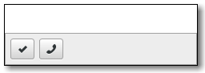

Gtk.ActionBar
Example
Methods
| Inherited: | Gtk.Bin (1), Gtk.Container (27), Gtk.Widget (256), GObject.Object (33), Gtk.Buildable (10) |
|---|
| static | new() |
| get_center_widget() | |
| pack_end(child) | |
| pack_start(child) | |
| set_center_widget(center_widget) |
Virtual Methods
| Inherited: | Gtk.Container (10), Gtk.Widget (82), GObject.Object (7), Gtk.Buildable (10) |
|---|
Properties
| Inherited: | Gtk.Container (3), Gtk.Widget (38) |
|---|
Child Properties
| Name | Type | Default | Flags | Short Description |
|---|---|---|---|---|
| pack-type | Gtk.PackType | Gtk.PackType.START | r/w | A Gtk.PackType indicating whether the child is packed with reference to the start or end of the parent |
| position | int | 0 | r | The index of the child in the parent |
Style Properties
| Inherited: | Gtk.Widget (17) |
|---|
Signals
| Inherited: | Gtk.Container (4), Gtk.Widget (69), GObject.Object (1) |
|---|
Fields
| Inherited: | Gtk.Bin (1), Gtk.Container (1), Gtk.Widget (1), GObject.InitiallyUnowned (3), GObject.Object (3) |
|---|
| Name | Type | Access | Description |
|---|---|---|---|
| bin | Gtk.Bin | r |
Class Details
- class Gtk.ActionBar(**kwargs)
Bases: Gtk.Bin
Gtk.ActionBar is designed to present contextual actions. It is expected to be displayed below the content and expand horizontally to fill the area.
It allows placing children at the start or the end. In addition, it contains an internal centered box which is centered with respect to the full width of the box, even if the children at either side take up different amounts of space.
- static new()
Returns: a new Gtk.ActionBar Return type: Gtk.Widget Creates a new Gtk.ActionBar widget.
New in version 3.12.
- get_center_widget()
Returns: the center Gtk.Widget. Return type: Gtk.Widget Retrieves the center bar widget of the bar.
New in version 3.12.
- pack_end(child)
Parameters: child (Gtk.Widget) – the Gtk.Widget to be added to action_bar Adds child to action_bar, packed with reference to the end of the action_bar.
New in version 3.12.
- pack_start(child)
Parameters: child (Gtk.Widget) – the Gtk.Widget to be added to action_bar Adds child to action_bar, packed with reference to the start of the action_bar.
New in version 3.12.
- set_center_widget(center_widget)
Parameters: center_widget (Gtk.Widget or None) – a widget to use for the center Sets the center widget for the Gtk.ActionBar.
New in version 3.12.